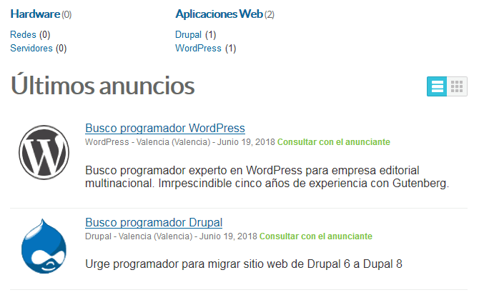
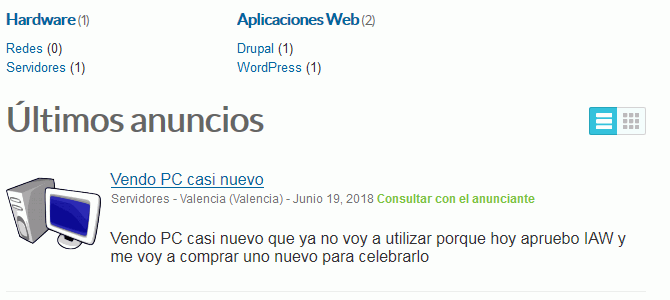
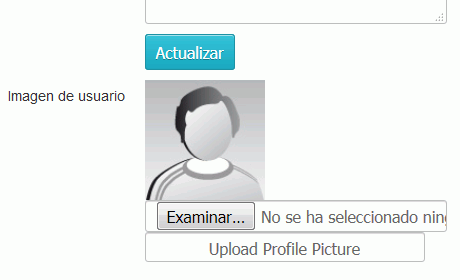
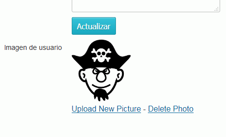
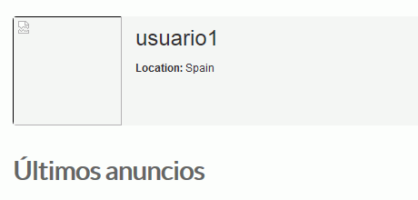
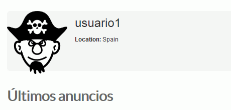
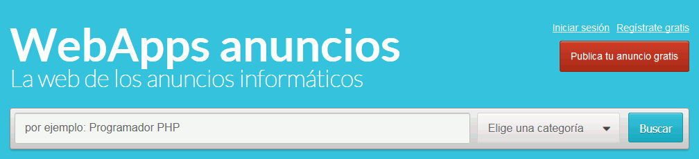
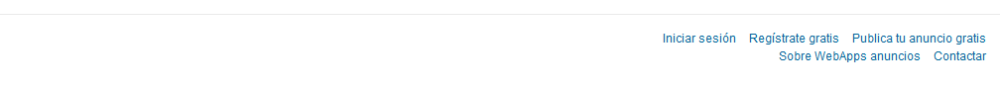
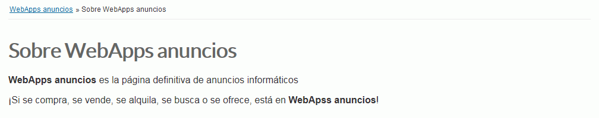
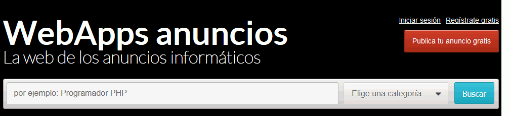

Aunque no se puedan recibir correos, consiga que los usuarios puedan iniciar sesión. Haga una captura de la pantalla en la que se vea cómo lo ha hecho y otra del resultado:
5. Crear anuncios
Cree dos anuncios como usuario2:

Haga dos capturas de toda la pantalla (creación y resultado).
Cree un anuncio del usuario1:

Haga una captura de toda la pantalla.
6. Incluir imagen de usuario
Los perfiles de usuario incluyen imágenes de gravatar, pero en este ejercicio se pide conseguir que el usuario pueda subir su propia imagen.
Las instrucciones de este plugin (en Internet) dicen que hay que hacer lo siguiente
Place this code on the theme page, user-profile.php - make sure this code is place OUTSIDE of the existing form on that page - this function will allow users to upload their profile picture
Code:
<?php profile_picture_upload(); ?>


3) Place this code on pages you wish to display the profile picture, including user-public-profile.php and item.php
Code:
<?php profile_picture_show(); ?>


Haga dos capturas de toda la pantalla en las que se vea que se puede elegir la imagen y el perfil del usuario.
Haga capturas del código fuente de las páginas que ha modificado en la que se vea el código añadido y eliminado.
7. Personalización
Modifique la página principal (parte superior):

Modifique la página principal (parte inferior):

Al hacer clic en el enlace Sobre WebApps anuncios, se debe ver la página siguiente:

Modifique la hoja de estilo principal del tema (no el archivo scss):

Haga capturas de toda la pantalla en las que se vea cómo se ha conseguido cada cosa.
8. Copia de seguridad
Entre en phpMyAdmin como usuario iaw_osclass_1 y exporte la tabla con el método rápido al fichero iaw_osclass_1.sql.